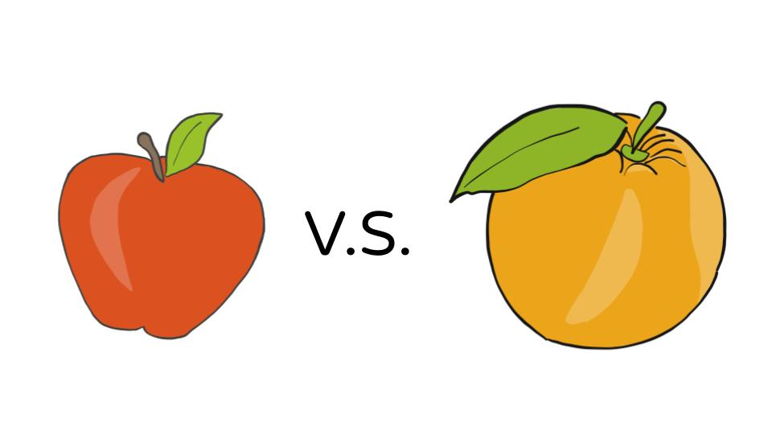
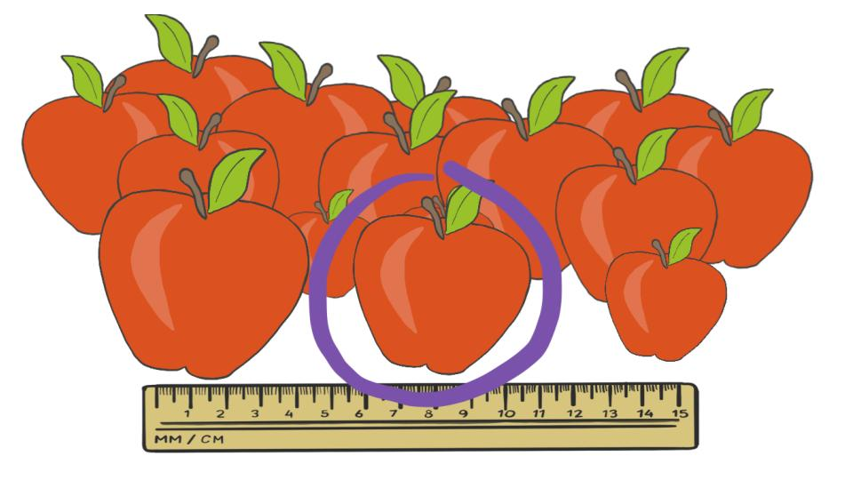
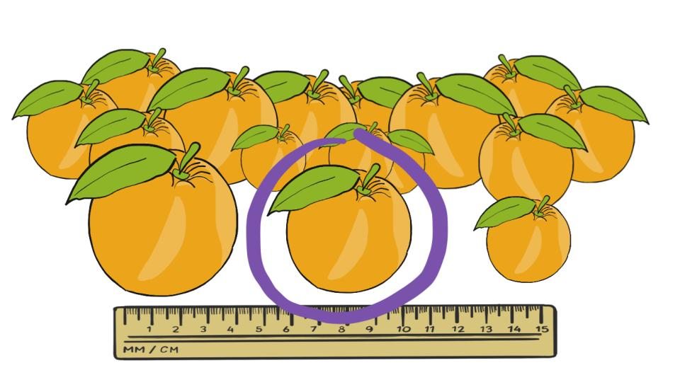
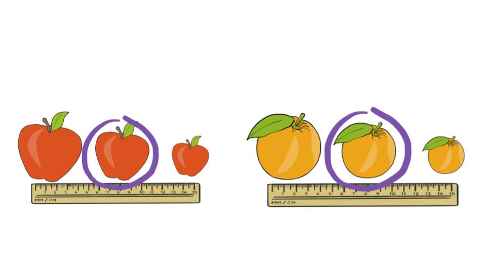

Measuring Position
There is an old saying, “You can’t compare apples and oranges.”

For example, direct comparison of the size of an apple and of an orange is impossible since the apples and oranges (besides both being a fruit) are very different things, and a 2 pound apple means something very different than a 2 pound orange.
But what we can do is compare the apple to other apples

and the orange to other oranges

By doing this we can make conclusions like: the apple and the orange are relatively the same size (for both being an apple/orange)

We will now use statistics to help us compare data in a relative manner!